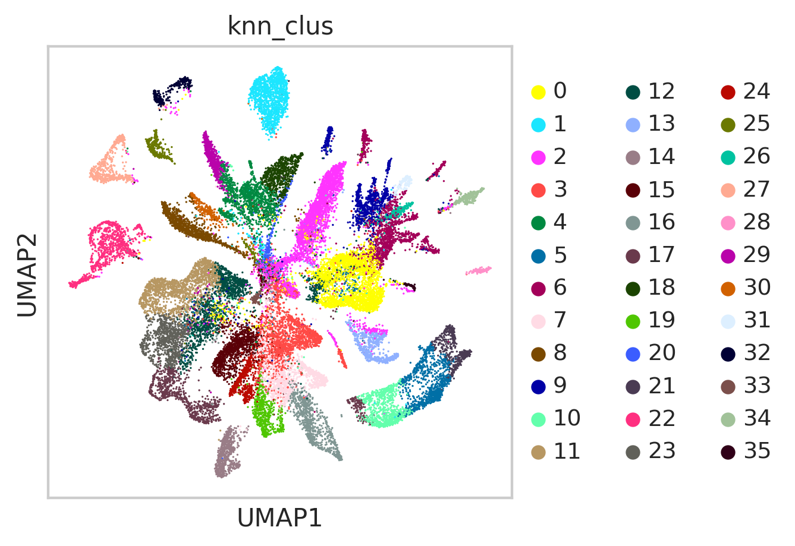
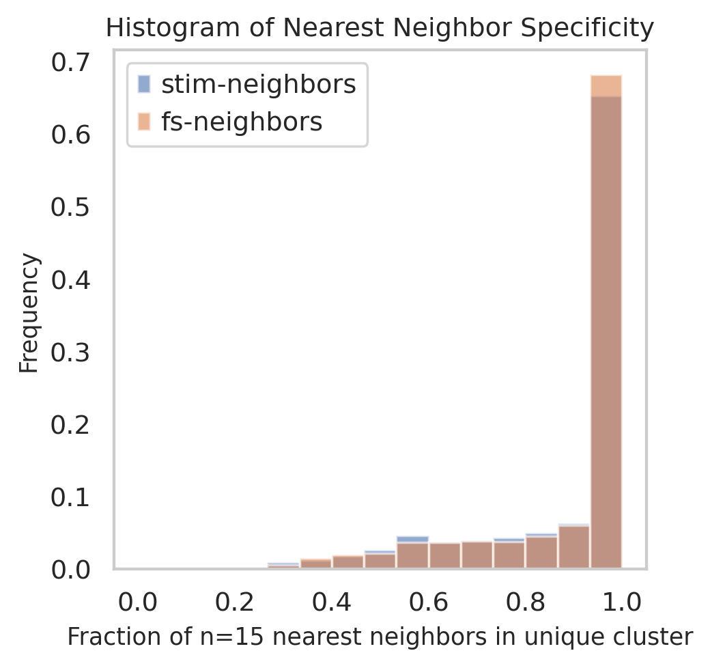
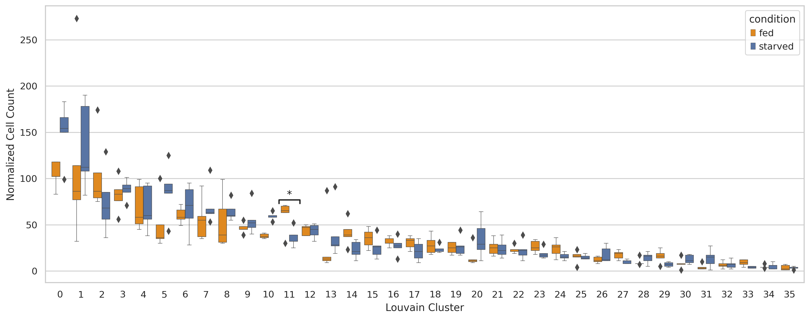
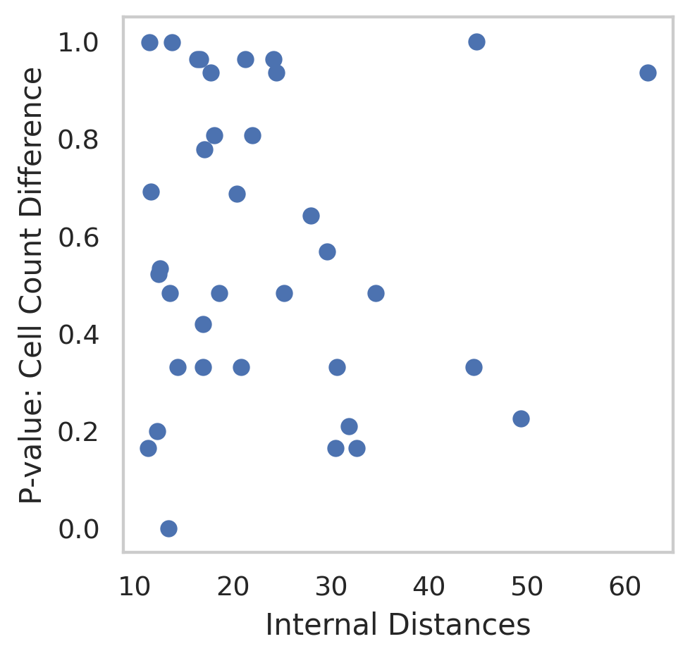
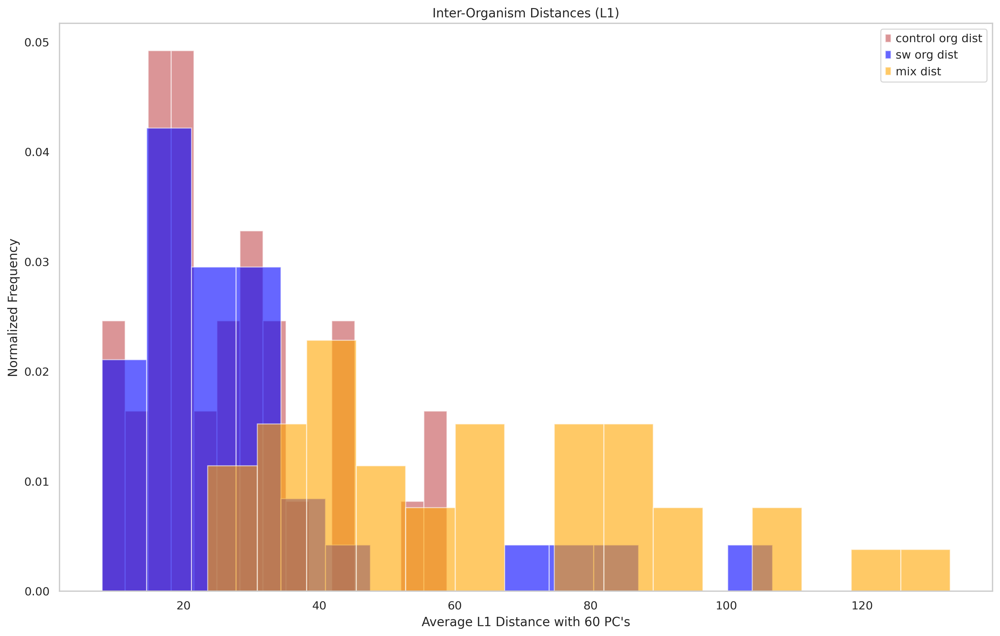

Comparative Analysis of Cell Atlas Concordance and Perturbation Responses
Mon Aug 17 20:20:34 UTC 2020
Download Data import requests
from tqdm import tnrange, tqdm_notebook
def download_file(doi,ext):
url = 'https://api.datacite.org/dois/'+doi+'/media'
r = requests.get(url).json()
netcdf_url = r['data'][0]['attributes']['url']
r = requests.get(netcdf_url,stream=True)
#Set file name
fname = doi.split('/')[-1]+ext
#Download file with progress bar
if r.status_code == 403:
print("File Unavailable")
if 'content-length' not in r.headers:
print("Did not get file")
else:
with open(fname, 'wb') as f:
total_length = int(r.headers.get('content-length'))
pbar = tnrange(int(total_length/1024), unit="B")
for chunk in r.iter_content(chunk_size=1024):
if chunk:
pbar.update()
f.write(chunk)
return fname
#Kallisto bus clustered starvation data, h5ad
download_file('10.22002/D1.1796','.gz')
#CellRanger Starvation h5ad data
download_file('10.22002/D1.1798','.gz')
#Import previously saved, clustered, & filtered stimulation data
download_file('10.22002/D1.1821','.gz')
/ usr / local / lib / python3 . 6 / dist - packages / ipykernel_launcher . py : 18 : TqdmDeprecationWarning : Please use ` tqdm . notebook . trange ` instead of ` tqdm . tnrange `
HBox ( children = ( FloatProgress ( value = 0 . 0 , max = 479630 . 0 ), HTML ( value = '' )))
HBox ( children = ( FloatProgress ( value = 0 . 0 , max = 45376 . 0 ), HTML ( value = '' )))
HBox ( children = ( FloatProgress ( value = 0 . 0 , max = 772581 . 0 ), HTML ( value = '' )))
'D1.1821.gz'
#Starvation h5ad data, all nonzero genes included, filtered for 'real cells' from de-multiplexing
download_file('10.22002/D1.1797','.gz')
#Import raw, unclustered stimulation data
download_file('10.22002/D1.1814','.gz')
/ usr / local / lib / python3 . 6 / dist - packages / ipykernel_launcher . py : 18 : TqdmDeprecationWarning : Please use ` tqdm . notebook . trange ` instead of ` tqdm . tnrange `
HBox ( children = ( FloatProgress ( value = 0 . 0 , max = 26058 . 0 ), HTML ( value = '' )))
HBox ( children = ( FloatProgress ( value = 0 . 0 , max = 78502 . 0 ), HTML ( value = '' )))
'D1.1814.gz'
#Import merged data with knn clusters
download_file('10.22002/D1.1823','.gz')
/ usr / local / lib / python3 . 6 / dist - packages / ipykernel_launcher . py : 18 : TqdmDeprecationWarning : Please use ` tqdm . notebook . trange ` instead of ` tqdm . tnrange `
HBox ( children = ( FloatProgress ( value = 0 . 0 , max = 257856 . 0 ), HTML ( value = '' )))
'D1.1823.gz'
!pip install --quiet anndata
!pip install --quiet scanpy
!pip install --quiet louvain
�[K |████████████████████████████████| 122kB 4.3MB/s
�[K |████████████████████████████████| 10.2MB 4.0MB/s
�[K |████████████████████████████████| 71kB 7.6MB/s
�[K |████████████████████████████████| 51kB 6.1MB/s
�[K |████████████████████████████████| 71kB 7.9MB/s
�[?25h Building wheel for sinfo (setup.py) ... �[?25l�[?25hdone
Building wheel for umap-learn (setup.py) ... �[?25l�[?25hdone
�[K |████████████████████████████████| 2.2MB 4.3MB/s
�[K |████████████████████████████████| 3.2MB 44.6MB/s
�[?25h
Import packages import pandas as pd
import anndata
import scanpy as sc
import numpy as np
import scipy.sparse
import warnings
warnings.filterwarnings('ignore')
from sklearn.neighbors import (KNeighborsClassifier,NeighborhoodComponentsAnalysis)
from sklearn.pipeline import Pipeline
from sklearn.manifold import TSNE
from sklearn.decomposition import PCA
import matplotlib
import matplotlib.pyplot as plt
%matplotlib inline
sc.set_figure_params(dpi=125)
import seaborn as sns
sns.set(style="whitegrid")
Do Distance Based Analysis for Inter- and Intra- Cluster Distances Read in previously saved data
# Description: bus_fs_combo data (filtered + clustered starvation (fed/starved --> fs) data)
# Description: bus_combo_noZero (filtered + clustered stimulation data) from Kallisto bus
#bus_fs_combo
bus_fs_combo = anndata.read("D1.1796")
print(bus_fs_combo)
bus_combo_noZero = anndata.read('D1.1821')
print(bus_combo_noZero)
#Previously saved overlap, merged data (from both experiments)
overlap_combo = anndata.read("D1.1823")
overlap_combo
AnnData object with n_obs × n_vars = 13673 × 8696
obs : 'batch' , 'n_counts' , 'n_countslog' , 'louvain' , 'leiden' , 'orgID' , 'fed' , 'starved' , 'fed_neighbor_score' , 'cellRanger_louvain' , 'annos' , 'new_cellRanger_louvain' , 'annosSub'
var : 'n_counts' , 'mean' , 'std'
uns : 'annosSub_colors' , 'annos_colors' , 'cellRanger_louvain_colors' , 'cellRanger_louvain_sizes' , "dendrogram_['new_cellRanger_louvain']" , 'dendrogram_new_cellRanger_louvain' , 'fed_colors' , 'fed_neighbor_score_colors' , 'leiden' , 'leiden_colors' , 'louvain' , 'louvain_colors' , 'neighbors' , 'new_cellRanger_louvain_colors' , 'orgID_colors' , 'paga' , 'pca' , 'rank_genes_groups' , 'umap'
obsm : 'X_nca' , 'X_pca' , 'X_tsne' , 'X_umap'
varm : 'PCs'
obsp : 'connectivities' , 'distances'
AnnData object with n_obs × n_vars = 18921 × 10260
obs : 'batch' , 'n_counts' , 'n_countslog' , 'louvain' , 'condition' , 'orgID' , 'cellRanger_louvain'
var : 'n_counts' , 'mean' , 'std'
uns : 'cellRanger_louvain_colors' , 'cellRanger_louvain_sizes' , 'condition_colors' , 'louvain' , 'neighbors' , 'paga' , 'pca' , 'umap'
obsm : 'X_pca' , 'X_tsne' , 'X_umap'
varm : 'PCs'
obsp : 'connectivities' , 'distances'
AnnData object with n_obs × n_vars = 32594 × 6756
obs : 'batch' , 'n_counts' , 'n_countslog' , 'louvain' , 'leiden' , 'orgID' , 'fed' , 'starved' , 'fed_neighbor_score' , 'cellRanger_louvain' , 'annos' , 'new_cellRanger_louvain' , 'annosSub' , 'condition' , 'cell_origin' , 'knn_clus'
var : 'n_counts-0' , 'mean-0' , 'std-0' , 'n_counts-1' , 'mean-1' , 'std-1' , 'mean' , 'std'
uns : 'pca'
obsm : 'X_nca' , 'X_pca' , 'X_tsne' , 'X_umap'
varm : 'PCs'
#How raw overlap adata was made (no genes filtered out)
bus_fs_raw = anndata.read("D1.1797")
bus_stim_raw = anndata.read("D1.1814")
#Merge datasets
bus_fs_raw.obs_names = [i+'_fs' for i in bus_fs_raw.obs_names]
bus_stim_raw.obs_names = [i+'_ieg' for i in bus_stim_raw.obs_names]
raw_overlap_combo = bus_fs_raw.concatenate(bus_stim_raw,join='outer', index_unique=None)
Predict labels for stimulation data
#Make X_pca with merged, use top n PC's
def getPredLabels(overlap_fs,overlap_combo, n_PC):
numFS = len(overlap_fs.obs_names)
X_train = overlap_combo.obsm['X_pca'][0:numFS,0:n_PC]
#X_pca at stim rows = X_test
X_test = overlap_combo.obsm['X_pca'][numFS:,0:n_PC]
#y_train is f/s louvain labels
y_train = overlap_fs.obs['cellRanger_louvain']
#Fit and predict
classifier = KNeighborsClassifier(n_neighbors=15)
classifier.fit(X_train, y_train)
y_pred = classifier.predict(X_test)
labels = list(y_train)+list(y_pred)
print(len(labels),' labels created')
return labels
How merged dataset (joint-PC space) with stimulation and starvation experiments was made (= overlap_combo) #Get intersection of var names between the two (making overlap_combo)
overlap = list(set(bus_combo_noZero.var_names).intersection(bus_fs_combo.var_names))
overlap_fs = bus_fs_combo[:,overlap]
overlap_stim = bus_combo_noZero[:,overlap]
#Merge datasets
overlap_fs.obs_names = [i+'_fs' for i in overlap_fs.obs_names]
overlap_stim.obs_names = [i+'_ieg' for i in overlap_stim.obs_names]
origin = list(np.repeat('FS',len(overlap_fs.obs_names))) + list(np.repeat('Stim',len(overlap_stim.obs_names)))
overlap_combo = overlap_fs.concatenate(overlap_stim,join='outer', index_unique=None)
overlap_combo.obs['cell_origin'] = pd.Categorical(origin)
sc.pp.scale(overlap_combo, max_value=10)
#Do PCA on merged dataset + plot variance explained
sc.tl.pca(overlap_combo, n_comps=60)
#sc.pl.pca_variance_ratio(overlap_combo, log=True)
#overlap_combo
labels = getPredLabels(overlap_fs,overlap_combo,n_PC = 60)
overlap_combo.obs['knn_clus'] = pd.Categorical(labels)
sc.pp.neighbors(overlap_combo,n_neighbors=150, n_pcs=60,random_state=42)
sc.tl.paga(overlap_combo, groups='knn_clus')
sc.pl.paga(overlap_combo, color=['knn_clus'])
sc.tl.tsne(overlap_combo,random_state=42,n_pcs=60,early_exaggeration=5)
WARNING : Consider installing the package MulticoreTSNE ( https :// github . com /DmitryUlyanov/ Multicore - TSNE ). Even for n_jobs = 1 this speeds up the computation considerably and might yield better converged results .
sc.tl.umap(overlap_combo,random_state=42,spread=2.5,min_dist = 0.8,init_pos='paga')
# sc.pl.tsne(overlap_combo,color=['knn_clus'])
sc.pl.umap(overlap_combo,color=['knn_clus'],color_map='viridis')

#overlap_combo.write('overlap_combo.h5ad')
Plot percent of K neighbors for each stim cell that are in one unique cluster from sklearn.neighbors import NearestNeighbors
import random
#Read in previously saved data
overlap_combo = anndata.read("D1.1823")
n = 15
neigh = NearestNeighbors(n_neighbors=n)
n_PC = 60
numFS = len(overlap_fs.obs_names)
X_train = overlap_combo.obsm['X_pca'][0:numFS,0:n_PC]
#X_pca at stim rows = X_test
X_test = overlap_combo.obsm['X_pca'][numFS:,0:n_PC]
#y_train is f/s louvain labels
y_train = overlap_fs.obs['cellRanger_louvain']
#Fit and predict
#neigh.fit(X_train)
#Subsample 70% of fed/starved data for training, test on remaining 30% and stim data
numSamp = np.int(0.7*X_train.shape[0])
ind = random.sample(range(0,X_train.shape[0]),numSamp)
allInd = range(0,X_train.shape[0])
rest = [i for i in allInd if i not in ind]
#Fit and predict
neigh.fit(X_train[ind,:])
X_rest = X_train[rest,:]
fsNeigh = neigh.kneighbors(X_rest)
stimNeigh = neigh.kneighbors(X_test)
stim_neighbors = stimNeigh[1]
fs_neighbors = fsNeigh[1]
#y_train = y_train[ind]
stim_perc = np.zeros(stim_neighbors.shape[0])
for i in range(0,len(stim_perc)):
#How many of top neighbors come from same cluster in fed/starved data (out of n=15)
stim_perc[i] = np.max(y_train[stim_neighbors[i]].value_counts())/n
fs_perc = np.zeros(fs_neighbors.shape[0])
#y_train = y_train[ind]
for i in range(0,len(fs_perc)):
fs_perc[i] = np.max(y_train[fs_neighbors[i]].value_counts())/n
plt.hist(stim_perc,density=False,range=(0,1),alpha=0.6 ,bins=15,weights=np.ones(len(stim_perc))/len(stim_perc),label='stim-neighbors')
plt.hist(fs_perc,density=False,range=(0,1),alpha=0.6 ,bins=15 ,weights=np.ones(len(fs_perc))/len(fs_perc),label='fs-neighbors')
plt.legend(loc='upper left')
plt.title('Histogram of Nearest Neighbor Specificity',fontsize=11)
plt.grid(b=None)
plt.xlabel("Fraction of n=15 nearest neighbors in unique cluster",fontsize=10)
plt.ylabel("Frequency",fontsize=10)
plt.show()

Determine Inter and Intra Cluster Distances (perturbation effect vs cell type distance) #Plot distances between centroid of stim-starved and fed-starved for each cluster
def changeBool(fed):
if fed == 'True':
return 'fed'
elif fed == 'False':
return 'starved'
else:
return 'stim'
def addConds(overlap_combo):
fs_conds = [changeBool(i) for i in overlap_combo.obs['fed']]
overlap_combo.obs['centroid_conds'] = pd.Categorical(fs_conds)
overlap_combo.obs['centroid_conds']
from sklearn.metrics import pairwise_distances
#Centroids of cell atlas/defined clusters
def getClusCentroids(overlap_combo,pcs=60,clusType='knn_clus'):
clusters = np.unique(overlap_combo.obs[clusType])
centroids = np.zeros((len(clusters),pcs))
for c in clusters:
sub_data = overlap_combo[overlap_combo.obs[clusType] == c]
pca_embed = sub_data.obsm['X_pca'][:,0:pcs]
centroid = pca_embed.mean(axis=0)
centroids[c,:] = list(centroid)
return centroids
#Distance between conditions within clusters
def getCentroidDists(overlap_combo,pcs=60,clusType='knn_clus'):
fedStarv = []
fsStim = []
cluster = []
#Initialize output matrix
addConds(overlap_combo)
clusters = np.unique(overlap_combo.obs[clusType])
centroid_dist = pd.DataFrame(columns =['fedStarv','fsStim','cluster','clus_color'])
for c in clusters:
#Get cells in cluster and their conditions
sub_data = overlap_combo[overlap_combo.obs[clusType] == c]
centroid_conds = sub_data.obs['centroid_conds']
#Get 2D tsne embedding
pca_embed = sub_data.obsm['X_pca'][:,0:pcs] #PCA
#Get location of condition cells
stim_pos = list(centroid_conds == 'stim')
allFS_pos = list(centroid_conds != 'stim')
fed_pos = list(centroid_conds == 'fed')
starved_pos = list(centroid_conds == 'starved')
#Get column means for x,y coords
meanFed = pca_embed[fed_pos,].mean(axis=0)
meanStarv = pca_embed[starved_pos,].mean(axis=0)
meanStim = pca_embed[stim_pos,].mean(axis=0)
meanFS = pca_embed[allFS_pos,].mean(axis=0)
cluster += [c]
#Dist between fed and starved
fs_dist = np.linalg.norm(meanFed - meanStarv,1)
#Dist between (all) starved experiment and stim
starvStim_dist = np.linalg.norm(meanFS - meanStim,1)
fedStarv += [fs_dist]
fsStim += [starvStim_dist]
centroid_dist['fedStarv'] = fedStarv
centroid_dist['fsStim'] = fsStim
centroid_dist['cluster'] = cluster
return centroid_dist
#Distance between conditions within clusters
def getStimCentroidDists(overlap_combo,pcs=60,clusType='knn_clus'):
swKCl = []
swDI = []
cluster = []
#Initialize output matrix
#addConds(overlap_combo)
clusters = np.unique(overlap_combo.obs[clusType])
centroid_dist = pd.DataFrame(columns =['swKCl','swDI','cluster','clus_color'])
for c in clusters:
#Get cells in cluster and their conditions
sub_data = overlap_combo[overlap_combo.obs[clusType] == c]
centroid_conds = sub_data.obs['condition']
#Get 2D tsne embedding
pca_embed = sub_data.obsm['X_pca'][:,0:pcs] #PCA
#Get location of condition cells
sw_pos = list(centroid_conds == 'SW')
kcl_pos = list(centroid_conds == 'KCl')
di_pos = list(centroid_conds == 'DI')
#Get column means for x,y coords
meanSW = pca_embed[sw_pos,].mean(axis=0)
meanKCl = pca_embed[kcl_pos,].mean(axis=0)
meanDI = pca_embed[di_pos,].mean(axis=0)
cluster += [c]
#Dist between fed and starved
swKCl_dist = np.linalg.norm(meanSW - meanKCl,1)
#Dist between (all) starved experiment and stim
swDI_dist = np.linalg.norm(meanSW - meanDI,1)
swKCl += [swKCl_dist]
swDI += [swDI_dist]
centroid_dist['swKCl'] = swKCl
centroid_dist['swDI'] = swDI
centroid_dist['cluster'] = cluster
return centroid_dist
Fed/Starved L1 Analysis Cell type v state plots
withinFS_Dists = getCentroidDists(bus_fs_combo,60,'cellRanger_louvain')
withinFS_Dists.head()
fedStarv
fsStim
cluster
clus_color
0
11.357661
NaN
0
NaN
1
17.776861
NaN
1
NaN
2
12.411180
NaN
2
NaN
3
18.126976
NaN
3
NaN
4
13.799874
NaN
4
NaN
#Compare to pairwise distances between cell atlas clusters
centroids = getClusCentroids(bus_fs_combo,60,'cellRanger_louvain')
#centroids_arr = centroids['centroid'].to_numpy()
pairCentroid_dists = pairwise_distances(centroids, metric = 'l1')
pairCentroid_dists.shape
print(np.mean(pairCentroid_dists))
np.unique(bus_fs_combo.obs['cellRanger_louvain'])
array([ 0, 1, 2, 3, 4, 5, 6, 7, 8, 9, 10, 11, 12, 13, 14, 15, 16,
17, 18, 19, 20, 21, 22, 23, 24, 25, 26, 27, 28, 29, 30, 31, 32, 33,
34, 35])
#Early cnidocytes, germ cells, stem cells have distances that overlap with intra-F/S distances for 14&19
np.where(pairCentroid_dists < 62)
(array([ 0, 0, 1, 2, 2, 3, 3, 4, 5, 6, 7, 7, 8, 9, 10, 11, 12,
12, 13, 14, 15, 16, 17, 18, 19, 20, 20, 21, 22, 23, 24, 25, 26, 27,
28, 29, 30, 31, 32, 33, 34, 35]),
array([ 0, 12, 1, 2, 20, 3, 7, 4, 5, 6, 3, 7, 8, 9, 10, 11, 0,
12, 13, 14, 15, 16, 17, 18, 19, 2, 20, 21, 22, 23, 24, 25, 26, 27,
28, 29, 30, 31, 32, 33, 34, 35]))
max(pairCentroid_dists.reshape((36*36,)))
reshape_noZero = [i for i in pairCentroid_dists.reshape((36*36,)) if i != 0]
print(np.min(reshape_noZero))
matplotlib.rc('axes',edgecolor='black')
plt.figure(figsize=(16,10))
plt.hist(withinFS_Dists['fedStarv'],color='r',bins=15,alpha=0.6,label='fed-starved',density=True)
plt.hist(reshape_noZero, bins=36,color = 'orange',alpha=0.6,label='pairwise clusters',density=True)
plt.legend(loc='upper right')
plt.title('Comparison to pairwise distribution (pairwise on clusters with fed/starved cells)')
plt.grid(b=None)
plt.xlabel("L1 Distance with 60 PC's")
plt.xticks(fontsize=18)
plt.yticks(fontsize=18)
plt.show()
#Area where line between cell state/type is blurred seems to be only in digestive endodermal clusters 14,19 (strong metabolic responses to starvation)
outlier_clus = withinFS_Dists[withinFS_Dists.fedStarv> 46.69]['cluster']
outlier_clus
14 14
19 19
Name: cluster, dtype: int64
Compare internal distances to differences in numbers of fed & starved cells (Spearman Rank correlation)
#Composition of broad cell types between fed and starved , cell counts
counts = pd.DataFrame(columns =['count', 'orgID','condition','cluster'])
clusters = np.unique(bus_fs_combo.obs['cellRanger_louvain'])
c = []
org = []
cond = []
clus = []
orgs = np.unique(bus_fs_combo.obs['orgID'])
conds = ['True', 'False']
for cl in clusters:
data = bus_fs_combo[bus_fs_combo.obs['cellRanger_louvain'].isin([cl])]
for cd in conds:
#c_data = data[data.obs['condition'].isin([cd])]
for o in orgs:
pos = (data.obs['fed'].isin([cd])) & (data.obs['orgID'].isin([o]))
org_data = data[pos]
c += [org_data.n_obs]
org += [o]
if cd == 'True':
cond += ['fed']
else:
cond += ['starved']
clus += [cl]
print(len(c))
counts['count'] = c
counts['orgID'] = org
counts['condition'] = cond
counts['cluster'] = clus
counts = counts[counts['count']> 0 ]
counts.head()
count
orgID
condition
cluster
0
118
1
fed
0
2
83
2
fed
0
3
102
3
fed
0
4
102
4
fed
0
5
118
5
fed
0
#One-way anova for each cluster
pvalsFTest = {}
for cl in clusters:
sub = counts[counts.cluster == cl]
subFed = sub[sub.condition == 'fed']
subStarv = sub[sub.condition == 'starved']
fedVals = list(subFed['count'])
starvVals = list(subStarv['count'])
pvalsFTest[cl] = scipy.stats.f_oneway(fedVals,starvVals)
import statsmodels.stats as sm
pvals = []
# sizes = []
for c in clusters:
pvals += [pvalsFTest[c][1]]
# sizes += [len(bus_fs_combo[bus_fs_combo.obs['cellRanger_louvain'].isin([c])].obs_names)]
pvals = sm.multitest.fdrcorrection(pvals,alpha=0.05, method='indep')
pvals
(array([False, False, False, False, False, False, False, False, False,
False, True, False, False, False, False, False, False, False,
False, False, False, False, False, False, False, False, False,
False, False, False, False, False, False, False, False, False]),
array([1.64253441e-01, 9.35522778e-01, 5.21386720e-01, 8.07361578e-01,
9.97826979e-01, 3.31498471e-01, 8.07361578e-01, 5.68508228e-01,
6.91908915e-01, 5.34369937e-01, 4.49408286e-04, 1.99877010e-01,
9.63535360e-01, 7.78106033e-01, 2.25187596e-01, 4.82880690e-01,
6.42595657e-01, 4.19543898e-01, 6.87698796e-01, 9.35522778e-01,
3.31498471e-01, 9.63535360e-01, 9.63535360e-01, 3.31498471e-01,
3.31498471e-01, 9.97826979e-01, 4.82880690e-01, 1.64253441e-01,
4.82880690e-01, 2.09527206e-01, 4.82880690e-01, 3.31498471e-01,
9.63535360e-01, 1.64253441e-01, 9.35522778e-01, 1.00000000e+00]))
#counts = counts[counts['count']> 0 ]
#https://stackoverflow.com/questions/36578458/how-does-one-insert-statistical-annotations-stars-or-p-values-into-matplotlib/37518947#37518947
counts['cluster'] = [int(i) for i in counts['cluster']]
plt.figure(figsize=(16, 6))
ax = sns.boxplot(x="cluster", y="count", hue="condition", data=counts,linewidth=0.5,palette=["darkorange", "b"])
ax.set(ylabel='Normalized Cell Count')
ax.set(xlabel='Louvain Cluster')
# statistical annotation
# alpha < 0.05
for i in [11]:
w = 0.5
x1, x2 = i-w,i+w
y, h, col = counts['count'][counts['cluster'] == i].max() + 2, 4, 'k'
plt.plot([x1, x1, x2, x2], [y, y+h, y+h, y], lw=1.5, c=col)
plt.text((x1+x2)*.5, y+h, "*", ha='center', va='bottom', color=col)
plt.show()

internalDist = list(withinFS_Dists['fedStarv'])
scipy.stats.spearmanr(internalDist,pvals[1])
SpearmanrResult(correlation=-0.050871795043468955, pvalue=0.768261688241116)
plt.scatter(internalDist,pvals[1])
plt.xlabel('Internal Distances')
plt.ylabel('P-value: Cell Count Difference')
plt.grid(None)

counts.to_csv('individ_cellCounts.csv',index=None)
Repeat for Stimulation Data overlap_combo = anndata.read("D1.1823")
bus_combo_noZero.obs['cellRanger_louvain'] = pd.Categorical(overlap_combo[overlap_combo.obs['cell_origin'] == 'Stim'].obs['knn_clus'])
withinStim_Dists = getStimCentroidDists(bus_combo_noZero,60,'cellRanger_louvain')
withinStim_Dists
swKCl
swDI
cluster
clus_color
0
7.350214
8.503921
0
NaN
1
21.065245
36.732548
1
NaN
2
20.948408
20.759415
2
NaN
3
13.442171
34.598927
3
NaN
4
14.205286
25.923903
4
NaN
5
22.041147
31.476810
5
NaN
6
14.477929
25.217993
6
NaN
7
11.867729
17.921000
7
NaN
8
12.292484
11.644725
8
NaN
9
22.288679
22.918928
9
NaN
10
10.736828
11.939169
10
NaN
11
9.275630
8.065190
11
NaN
12
5.801665
22.793827
12
NaN
13
31.335329
31.087091
13
NaN
14
25.940889
28.084023
14
NaN
15
10.881435
18.185766
15
NaN
16
25.211300
17.230129
16
NaN
17
22.916479
12.188016
17
NaN
18
21.876759
14.847662
18
NaN
19
23.442184
24.017313
19
NaN
20
56.649334
65.165184
20
NaN
21
24.023872
16.950150
21
NaN
22
13.108215
19.507177
22
NaN
23
6.248736
12.076812
23
NaN
24
32.759808
45.112389
24
NaN
25
11.500583
18.344841
25
NaN
26
34.523087
26.619263
26
NaN
27
25.315067
31.565296
27
NaN
28
46.271626
31.329525
28
NaN
29
13.501001
10.425589
29
NaN
30
18.720173
38.476334
30
NaN
31
38.197033
57.892250
31
NaN
32
31.816713
17.769464
32
NaN
33
40.618649
44.847408
33
NaN
34
11.309300
12.301980
34
NaN
35
16.585102
11.396259
35
NaN
#Compare to pairwise distances between cell atlas clusters
centroids = getClusCentroids(bus_combo_noZero,60,'cellRanger_louvain')
#centroids_arr = centroids['centroid'].to_numpy()
pairCentroid_dists = pairwise_distances(centroids, metric = 'l1')
pairCentroid_dists.shape
print(np.mean(pairCentroid_dists))
#withinStim_Dists['swDI']
print(np.max(withinStim_Dists))
swKCl 56.649334
swDI 65.165184
cluster 35.000000
clus_color NaN
dtype: float64
max(pairCentroid_dists.reshape((36*36,)))
reshape_noZero = [i for i in pairCentroid_dists.reshape((36*36,)) if i != 0]
print(np.min(reshape_noZero))
plt.figure(figsize=(16,10))
plt.hist(withinStim_Dists['swKCl'],color='r',bins=15,alpha=0.6,label='SW-KCl',density=True)
plt.hist(withinStim_Dists['swDI'],color='b',bins=15,alpha=0.6,label='SW-DI',density=True)
plt.hist(reshape_noZero, bins=36,color = 'orange',alpha=0.6,label='pairwise clusters',density=True)
plt.legend(loc='upper right')
plt.title('Comparison to pairwise distribution (pairwise on clusters with SW/KCl/DI cells)')
plt.xlabel("L1 Distance with 60 PC's")
plt.ylabel("Normalized Frequency")
plt.grid(b=None)
plt.show()
print(np.where(pairCentroid_dists < 65.46))
(array([ 0, 1, 2, 3, 4, 5, 6, 7, 8, 9, 10, 11, 12, 13, 14, 15, 16,
17, 18, 19, 20, 21, 22, 23, 24, 25, 26, 27, 28, 29, 30, 31, 32, 33,
34, 35]), array([ 0, 1, 2, 3, 4, 5, 6, 7, 8, 9, 10, 11, 12, 13, 14, 15, 16,
17, 18, 19, 20, 21, 22, 23, 24, 25, 26, 27, 28, 29, 30, 31, 32, 33,
34, 35]))
Organismal Distances, Fed/Starved + Stimulation Batch effect plots
#condition -- Stim, fed -- Fed/Starved data
overlap_combo = anndata.read("D1.1823")
overlap_combo
AnnData object with n_obs × n_vars = 32594 × 6756
obs : 'batch' , 'n_counts' , 'n_countslog' , 'louvain' , 'leiden' , 'orgID' , 'fed' , 'starved' , 'fed_neighbor_score' , 'cellRanger_louvain' , 'annos' , 'new_cellRanger_louvain' , 'annosSub' , 'condition' , 'cell_origin' , 'knn_clus'
var : 'n_counts-0' , 'mean-0' , 'std-0' , 'n_counts-1' , 'mean-1' , 'std-1' , 'mean' , 'std'
uns : 'pca'
obsm : 'X_nca' , 'X_pca' , 'X_tsne' , 'X_umap'
varm : 'PCs'
#Use overlap_combo
#Go through each clustee
clus = np.unique(overlap_combo.obs['knn_clus'])
fed_data = overlap_combo[overlap_combo.obs['fed'] == 'True']
sw_data = overlap_combo[overlap_combo.obs['condition'] == 'SW']
fed_orgs = np.unique(fed_data.obs['orgID'])
sw_orgs = np.unique(sw_data.obs['orgID'])
pcs = 60
org_metadata = pd.DataFrame(columns =['orgID','cluster','condition']) #centroid = row mean for all cells in organism
num_points = (len(fed_orgs)+len(sw_orgs))*len(clus)
#Get centroid in PCA space in each cluster for each organism
org_centroids = np.zeros((num_points,pcs))
condition = []
cluster = []
orgID = []
count = 0
toRemove = []
for c in clus:
#Get all cells in chosen condition
fed_sub = fed_data[fed_data.obs['knn_clus'] == c]
fed_pca_embed = fed_sub.obsm['X_pca'][:,0:pcs] #PCA matrix
sw_sub = sw_data[sw_data.obs['knn_clus'] == c]
sw_pca_embed = sw_sub.obsm['X_pca'][:,0:pcs] #PCA matrix
#For each org, get centroid of cells (X_pca)
for sw in sw_orgs:
condition += ['SW']
cluster += [c]
orgID += [sw]
#Get location of org cells
org_pos = list(sw_sub.obs['orgID'] == sw)
#Sum down rows of cells for each PC
if len(sw_pca_embed[org_pos,]) == 0:
toRemove += [count]
org_centroids[count,:] = list(sw_pca_embed[org_pos,].mean(axis=0))
count += 1
for fed in fed_orgs:
condition += ['Fed']
cluster += [c]
orgID += [fed]
#Get location of org cells
org_pos = list(fed_sub.obs['orgID'] == fed)
#Sum down rows of cells for each PC
if len(fed_pca_embed[org_pos,]) == 0:
toRemove += [count]
org_centroids[count,:] = list(fed_pca_embed[org_pos,].mean(axis=0))
count += 1
#For each org, get centroid of cells (X_pca)
#Average pairwise distance between org centroid
org_metadata['orgID'] = orgID
org_metadata['cluster'] = cluster
org_metadata['condition'] = condition
org_metadata = org_metadata.drop(org_metadata.index[toRemove])
org_metadata.head()
org_centroids= np.delete(org_centroids, toRemove, 0)
org_centroids[0,:]
array([-2.25471210e+00, -1.51177585e+00, -1.93993020e+00, -9.54584032e-02,
-2.38718843e+00, -1.51001954e+00, -2.81468654e+00, 1.05100930e+00,
1.54143572e+00, -7.58547902e-01, -1.50774598e+00, -2.47600722e+00,
7.53088653e-01, -9.25398111e-01, 5.30199647e-01, -2.36053783e-02,
9.48955193e-02, -6.50646329e-01, 1.05686748e+00, -2.67228413e+00,
2.98014688e+00, 5.93579225e-02, 5.69488704e-01, -1.05491745e+00,
1.12574625e+00, -1.49573892e-01, 5.68022847e-01, -1.29234409e+00,
1.40452191e-01, -3.84621084e-01, 2.95532733e-01, 1.13393039e-01,
2.88706899e-01, -5.50938368e-01, -1.17623888e-01, -1.51531205e-01,
-7.78403163e-01, -7.72583902e-01, 9.31857646e-01, 9.21139657e-01,
-4.21358228e-01, 9.92068797e-02, -3.57610792e-01, 1.40223965e-01,
4.30851281e-02, 2.75345147e-01, 5.04794896e-01, -1.59878790e-01,
1.80910379e-01, 2.61838585e-01, -2.14510873e-01, 1.25861779e-01,
-3.76004130e-01, 2.04274207e-01, -1.61955715e-03, -9.25957318e-03,
5.98372109e-02, -2.70651639e-01, 2.62535036e-01, 1.59801412e-02])
org_pairDists = pd.DataFrame(columns =['cluster','pair_fed','pair_sw','pair_mix'])
cluster = []
pair_fed = []
pair_sw = []
pair_mix = []
for c in clus:
#Fed org centroids
where_fed = (org_metadata.cluster == c) & (org_metadata.condition == 'Fed')
fed_mat = org_centroids[where_fed,:]
pair_fed_dist = pairwise_distances(fed_mat, metric = 'l1')
pair_fed_mean = np.mean(pair_fed_dist)
#SW org centroids
where_sw = (org_metadata.cluster == c) & (org_metadata.condition == 'SW')
sw_mat = org_centroids[where_sw,:]
pair_sw_dist = pairwise_distances(sw_mat, metric = 'l1')
pair_sw_mean = np.mean(pair_sw_dist)
pair_mix_dist = pairwise_distances(fed_mat,sw_mat, metric = 'l1')
pair_mix_mean = np.mean(pair_mix_dist)
cluster += [c]
pair_fed += [pair_fed_mean]
pair_sw += [pair_sw_mean]
pair_mix += [pair_mix_mean]
org_pairDists['cluster'] = cluster
org_pairDists['pair_fed'] = pair_fed
org_pairDists['pair_sw'] = pair_sw
org_pairDists['pair_mix'] = pair_mix
cluster
pair_fed
pair_sw
pair_mix
0
0
8.005131
7.995117
23.570756
1
1
15.629137
32.140367
75.364971
2
2
9.598802
14.187616
49.332659
3
3
19.421792
22.127487
42.742088
4
4
16.030268
26.287836
36.652727
plt.figure(figsize=(16,10))
plt.hist(org_pairDists['pair_fed'],color='r',bins=15,alpha=0.6,label='control org dist',density=True)
plt.hist(org_pairDists['pair_sw'],color='blue',bins=15,alpha=0.6,label='sw org dist',density=True)
plt.hist(org_pairDists['pair_mix'], bins=15,color = 'orange',alpha=0.6,label='mix dist',density=True)
plt.legend(loc='upper right')
plt.title('Inter-Organism Distances (L1)')
plt.grid(b=None)
plt.xlabel("Average L1 Distance with 60 PC's")
plt.ylabel("Normalized Frequency")
plt.show()

AnnData object with n_obs × n_vars = 32594 × 6756
obs : 'batch' , 'n_counts' , 'n_countslog' , 'louvain' , 'leiden' , 'orgID' , 'fed' , 'starved' , 'fed_neighbor_score' , 'cellRanger_louvain' , 'annos' , 'new_cellRanger_louvain' , 'annosSub' , 'condition' , 'cell_origin' , 'knn_clus'
var : 'n_counts-0' , 'mean-0' , 'std-0' , 'n_counts-1' , 'mean-1' , 'std-1' , 'mean' , 'std'
uns : 'pca'
obsm : 'X_nca' , 'X_pca' , 'X_tsne' , 'X_umap'
varm : 'PCs'
overlap_combo.write('overlap_combo.h5ad')
... storing 'louvain' as categorical
... storing 'leiden' as categorical
... storing 'orgID' as categorical
... storing 'fed' as categorical
... storing 'starved' as categorical
... storing 'cellRanger_louvain' as categorical
... storing 'annos' as categorical
... storing 'new_cellRanger_louvain' as categorical
... storing 'annosSub' as categorical
... storing 'condition' as categorical